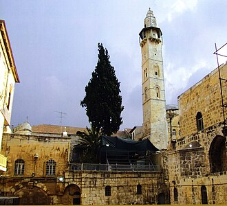

Presentación
La mosquée d'Omar, à proprement parler, est une mosquée portant le nom du calife Omar Ibn al-Kattâb, compagnon de Mahomet, qui se trouve juste en face de l'entrée du Saint-Sépulcre au sud de celui-ci, dans le quartier chrétien de la vieille ville de Jérusalem.
مسجد عمر بن الخطاب يقع في الفناء الجنوبي من كنيسة القيامة في حارة النصارى بمدينة بالقدس.
The Mosque of Omar is a mosque, located inside the Old City of Jerusalem. Situated opposite the southern courtyard of the Church of the Holy Sepulchre, in the Muristan area of the Christian Quarter, the mosque is not open to tourists, and can be accessed only for praying. The mosque was completed during the Ayyubid era.
Masjid Umar adalah salah satu masjid yang berdiri di Kota Lama Yerusalem. Letak masjid ini berada di sebelah selatan Gereja Makam Kudus dan berada di Wilayah Kristen di Yerusalem.
مسجد عمر (عربی: مسجد عمر بن الخطاب) یروشلم میں کلیسائے مقبرہ مقدس کے جنوبی صحن کے سامنے واقع ہے۔ 637ء میں مسلم افواج کی یروشلم کی فتح کے وقت سوفرونیئس نے شرط رکھی کہ کہ شہر کو صرف مسلمانوں کے خلیفہ عمر بن خطاب کے حوالے کیا جائے گا۔ چنانچہ خلیفہ وقت نے یروشلم کا سفر کیا۔ حضرت عمر نے سوفرونیئس کے ساتھ شہر کا دورہ کیا۔ کلیسائے مقبرہ مقدس کے دورہ کے دوران نماز کا وقت آ گیا اور سوفرونیئس نے حضرت عمر کو کلیسا میں نماز پڑھنے کی دعوت دی لیکن حضرت عمر نے کلیسا میں نماز پڑھنے کی بجائے باہر آ کر نماز پڑھی۔ جس کی وجہ یہ بیان کی کہ مستقبل میں مسلمان اسے عذر کے طور پر استعمال کرتے ہوئے کلیسا کو مسجد کے لیے استعمال نہ کریں۔ خلیفہ کی دانشمندی اور دوراندیشی کو دیکھتے ہوئے کلیسا کی چابیاں حضرت عمر کو پش کی گئیں۔ اس پیشکش کو انکار نہ کرنے کے باعث چابیاں مدینہ سے تعلق رکھنے والے ایک خاندان کو دے دی گئیں اور انھیں کلیسا کو کھولنے اور بند کرنے کا حکم دیا، آج تک بھی کلیسا کی چابیاں اسی مسلمان خاندان کے پاس ہیں
Die Omar-Moschee befindet sich in unmittelbarer Nachbarschaft zur Grabeskirche im christlichen Viertel der Jerusalemer Altstadt in Israel.
La Mezquita de Omar es un lugar de culto islámico dentro de la Ciudad Vieja de Jerusalén. Se encuentra al lado del Santo Sepulcro en el complejo de Muristán en el Barrio Cristiano. Fue construida en el lugar en el cual según la tradición musulmana rezó el Califa Omar ibn al-Jattab, luego de visitar el Santo Sepulcro. La mezquita no está abierta a turistas, y solo se puede entrar a ella para orar.
La moschea di Omar è situata di fronte al cortile meridionale della Basilica del Santo Sepolcro nel quartiere cristiano della città Vecchia di Gerusalemme.
De Omarmoskee is een twaalfde-eeuwse moskee in Jeruzalem. De moskee is gelegen tegenover de zuidelijke binnenhof van de Heilig Grafkerk in de wijk Muristan van Jeruzalem.
奥马尔清真寺 位于耶路撒冷圣墓教堂南部庭院对面的医院区（Muristan）。637年耶路撒冷被阿布•乌拜达率领的穆斯林拉希登军队围困，耶路撒冷牧首 索法罗尼尤斯（圣沙福尼）拒绝向除哈里发奥马尔（579-644）本人以外者投降。于是奥马尔前往耶路撒冷接受投降。随后他参观圣墓教堂，索法罗尼尤斯邀请他到教堂内祈祷，被奥马尔拒绝，而是在教堂外的外院祈祷，那里被认为是大卫王祈祷的地方。这样就避免成为先例，从而危及圣墓教堂作为基督教堂的地位。
उमर मस्जिद; Mosque of Omar: पुराने यरुशलम के ईसाई क्वार्टर के मुरिसन क्षेत्र में पवित्र सेपुलर के चर्च के दक्षिणी में स्थित है।
Мечеть Омара расположена в Христианском квартале в Иерусалиме, напротив храма Гроба Господня, с северной стороны площади перед главным входом в храм.
Omarmoskén i Jerusalem ligger bredvid Den heliga gravens kyrka i den gamla staden. Den byggdes av sultan Saladin 1193 till åminnelse av muslimernas erövring av Jerusalem 637 och att kalif Omar ibn al-Khattab då förrättade bön på denna plats.
En el mapa
Documentos y enlaces
- Wikipédia — Français
- Wikipédia — العربية
- Wikipédia — English
- Wikipédia — Türkçe
- Wikipédia — Bahasa Indonesia
- Wikipédia — اردو
- Wikipédia — Deutsch
- Wikipédia — Español
- Wikipédia — Italiano
- Wikipédia — Nederlands
- Wikipédia — 中文
- Wikipédia — हिन्दी
- Wikipédia — Русский
- Wikipédia — Svenska
- Wikidata — Q2151217
Datos: Wikidata (CC0), actualizados cada 3 meses. El año es la fecha de construcción conocida más antigua del edificio: para un edificio convertido después en mezquita (como Santa Sofía), es la del edificio original. Fotos: Wikimedia Commons, autor y licencia en la página de cada foto.